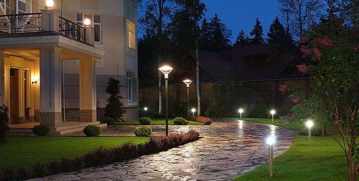
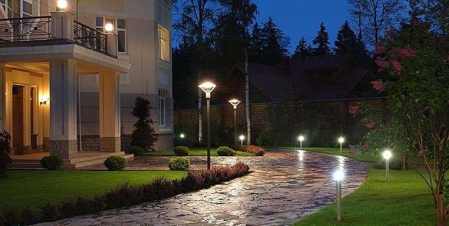
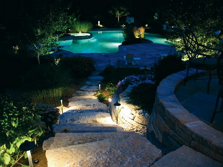
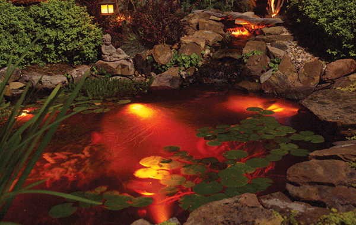
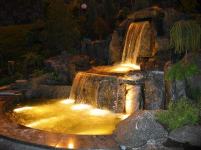
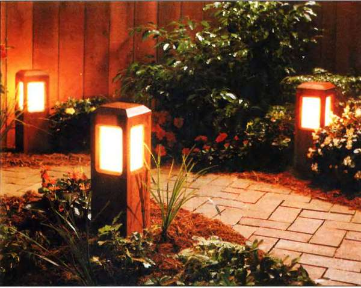

| Освещение в Черновцах |
|
С зарождением жизни на Земле свет отыгрывал для человека не меньшую роль, чем пища и воздух. Именно свет олицетворял все лучшее и чистое, а тьма вселяла лишь суеверный страх, воплощала собой воплощение зла. Поэтому у человека возникает тяга продолжить день, отодвинуть наступление мглы у себя на участке или открытой террасе. Первым источником света стал костер, потом ему на помощь пришел факел, его лихорадочное пламя пронизывало тьму, по ночам "обнимая" стены замков и монастырей. В 21 веке свет используется не только для уличного дорожного освещения. С помощью подсвечивания подчеркивается роскошь обрамления фасада дома или декоративные малые архитектурные формы. Использование современных технологий, в том числе сетей с напряжением 12 вольт, позволяет подсвечивать водоемы, каскады, ручьи и фонтаны. Прогулки по вечернему и ночному саду превратятся в сказочные, благодаря светильникам, встроенным в дорожку или светящуююся брусчатку. Но свет можно использовать не только в его прямом назначении, но и как инструмент декора: самая незаметная стена оживет, превратившись в театр теней. Создавая ландшафтный проект освещения участка, необходимо решить две задачи: эстетическую, обеспечивая тем самым комфорт визуальной среды и практическую, ответственную за безопасность перемещения по участку в темное время суток. Одним из видов фонарей, способным решить обе эти задачи на вашем участке, есть уличные светильники. Казалось бы, что интересного можно еще сказать о таком простом и знакомом из детства источнике света как уличные светильники. На самом деле сказать при желании можно многое, но лучше показать, а еще лучше показать "свет в деле" на примере реализованных проектов. Чтобы вышло так же красиво, вам не только необходимо обратиться к специалистам, которые умеют воплощать "световые идеи" в жизнь, но и, продумывая ландшафтный дизайн-проект вашего участка, иметь минимальное представление, чего вы хотите вообще.   Общие «черты личности» уличные светильники сохранили еще с пушкинских времен, однако их видов стало заметно больше, изменился дизайн элементов, добавляя к классике "детали" нынешнего времени. Разнообразие, как известно, будит фантазию и, делая заказ, вы можете принять участие в создании "собственного светила" подобрать плафоны нужной вам конфигурации, необходимого размера и решенные в необходимой цветовой гамме. В отдельных случаях, когда предложенного ассортимента недостаточно, современные технологии производства позволяют выдувать плафоны, согласно вашему желанию. Кроме этих благ уличные светильники сконструированы так, что позволяют создавать необходимую вам высоту (в основном от 0,5 до 5 метров). Таким образом, освещая необходимые зоны современными светильниками, вы решаете так же и эстетичную задачу.  Следует помнить, что уличные светильники применяются для общего освещения участка и направляют поток света в стороны, так называемая синусная кривая распределения света, поэтому дорога чаще всего освещенная недостаточно, а вот окружающий участок - пространство «освещенное»в полной мере. Эту особенность вы должны учитывать, разрабатывая ваш ландшафтный проект. Еще одна важная деталь: очень сильный эффект ослепления, что является особенностью конструкции. Одной из действенных мер, которые смягчают этот эффект, есть плафоны с матового стекла. Согласно вышеизложенному, уличные светильники для общего освещения лучше всего использовать на высоких сопротивлениях, а, установленные на уровне человеческого роста, они могут быть декоративным элементом сада, и находиться вне зон отдыха, тем самым, обеспечивая освещенность элементов декора, но, не заслепляя человека.  |